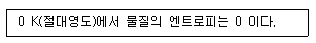
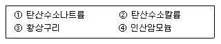
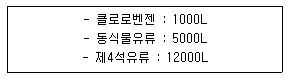
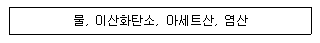

위험물산업기사 (2013-06-02 기출문제)
1과목: 일반화학
1. [H+] = 2 × 10-6M 인 용액의 pH는 약 얼마인가?
- 5.7
- 4.7
- 3.7
- 2.7
(정답률: 81%)

2. 다음 중 완충용액에 해당하는 것은?
- CH3COONa 와 CH3COOH
- NH4Cl 와 HCl
- CH3COONa 와 NaOH
- HCOONa 와 Na2SO4
(정답률: 83%)
3. 730mmHg, 100℃에서 257mL 부피의 용기 속에 어떤 기체가 채워져 있다. 그 무게는 1.671g 이다. 이 물질의 분자량은 약 얼마인가?
- 28
- 56
- 207
- 257
(정답률: 76%)
4. 디에틸에테르에 관한 설명으로 옳지 않은 것은?
- 휘발성이 강하고 인화성이 크다.
- 증기는 마취성이 있다.
- 2개의 알킬기가 있다.
- 물에 잘 녹지만 알코올에는 불용이다.
(정답률: 85%)
5. 암모니아 분자의 구조는?
- 평면
- 선형
- 피라밋
- 사각형
(정답률: 86%)
6. 표준상태에서의 생성엔탈피가 다음과 같다고 가정할 때 가장 안정한 것은?
- △HHF = -2696㎉/㏖
- △HHCL = -92.30㎉/㏖
- △HHBr = -36.2㎉/㏖
- △HHl = 25.21㎉/㏖
(정답률: 67%)
7. 어떤 기체의 확산 속도는 SO2의 2배이다. 이 기체의 분자량은 얼마인가?
- 8
- 16
- 32
- 64
(정답률: 79%)
8. 원자에서 복사되는 빛은 선 스펙트럼을 만드는데 이것으로부터 알 수 있는 사실은?
- 빛에 의한 광전자의 방출
- 빛이 파동의 성질을 가지고 있다는 사실
- 전자껍질의 에너지의 불연속성
- 원자핵 내부의 구조
(정답률: 86%)
9. 밀도가 2g/mL 인 고체의 비중은 얼마인가?
- 0.002
- 2
- 20
- 200
(정답률: 75%)
10. CH4 16g 중에는 C 가 몇 ㏖ 포함되었는가?
- 1
- 2
- 4
- 16
(정답률: 85%)
11. 방사성 원소에서 방출되는 방사선 중 전기장의 영향을 받지 않아 취어지지 않는 선은?
- α선
- β선
- γ선
- α, β, γ선
(정답률: 91%)
12. 산(acid)의 성질을 설명한 것 중 틀린 것은?
- 수용액 속에서 H+를 내는 화합물이다.
- pH 값이 작을수록 강산이다.
- 금속과 반응하여 수소를 발생하는 것이 많다.
- 붉은색 리트머스 종이를 푸르게 변화시킨다.
(정답률: 90%)
13. 다음 중 전자의 수가 같은 것으로 나열된 것은?
- Ne와 Cl-
- Mg+2와 O-2
- F와 Ne
- Na와 Cl-
(정답률: 79%)
14. 할로겐 원소에 대한 설명 중 옳지 않은 것은?
- 요오드의 최외각 전자는 7개이다.
- 할로겐 원소 중 원자 반지름이 가장 작은 원소는 F 이다.
- 염화이온은 염화은의 흰색침전 생성에 관여한다.
- 브롬은 상온에서 적갈색 기체로 존재한다.
(정답률: 67%)
15. 분자식이 같으면서도 구조가 다른 유기화합물을 무엇이라고 하는가?
- 이성질체
- 동소체
- 동위원소
- 방향족화합물
(정답률: 87%)
16. CH4(g) + 202(g) → CO2(g) + 2H2O(g)의 반응에서 메탄의 농도를 일정하게 하고 산소의 농도를 2배로 하면 동일한 온도에서 반응속도는 몇 배로 되는가?
- 2배
- 4배
- 6배
- 8배
(정답률: 80%)
17. 다음은 열역학 제 몇 법칙에 대한 내용인가?

- 열역학 제 0 법칙
- 열역학 제 1 법칙
- 열역학 제 2 법칙
- 열역학 제 3 법칙
(정답률: 89%)
18. CuSO4 수용액을 10A 의 전류로 32분 10초 동안 전지분해시켰다. 음극에서 석출되는 Cu 의 질량은 몇 g 인가? (단, Cu 의 원자량은 63.6이다.)
- 3.18
- 6.36
- 9.54
- 12.72
(정답률: 61%)
19. 원자번호 19, 질량수 39 인 칼륨 원자의 중성자수는 얼마인가?
- 19
- 20
- 39
- 58
(정답률: 86%)
20. 다음 중 부동액으로 사용되는 것은?
- 에탄
- 아세톤
- 이황화탄소
- 에틸렌글리콜
(정답률: 76%)
2과목: 화재예방과 소화방법
21. 위험물안전관리법령상 제1류 위험물에 속하지 않는 것은?
- 염소산염류
- 무기과산화물
- 유기과산화물
- 중크롬산염류
(정답률: 80%)
22. 탄화칼슘 60000kg 를 소요단위로 산정하면?
- 10단위
- 20단위
- 30단위
- 40단위
(정답률: 82%)
23. 위험물안전관리법령상 디에틸에테르 화재발생시 적응성이 없는 소화기는?
- 이산화탄소소화기
- 포소화기
- 봉상강화액소화기
- 할로겐화합물소화기
(정답률: 59%)
24. 분말소화약제로 사용할 수 있는 것을 모두 옳게 나타낸 것은?

- ①, ②, ③, ④
- ①, ④
- ①, ②, ③
- ①, ②, ④
(정답률: 90%)
25. 고정지붕구조 위험물 옥외탱크저장의 탱크 안에 설치하는 고정포방출구가 아닌 것은?
- 특형 방출구
- Ⅰ형 방출구
- Ⅱ형 방출구
- 표면하 주입식 방출구
(정답률: 72%)
26. 위험물안전관리법령상 지정수량의 3천배 초과 4천배 이하의 위험물을 저장하는 옥외탱크저장소에 확보하여야하는 보유공지는 얼마인가?(오류 신고가 접수된 문제입니다. 반드시 정답과 해설을 확인하시기 바랍니다.)
- 6m 이상
- 9m 이상
- 12m 이상
- 15m 이상
(정답률: 74%)
27. 공기 중 산소는 부피백분율과 질량백분율로 각각 약 몇 % 인가?
- 79%, 21%
- 21%, 23%
- 23%, 21%
- 21%, 79%
(정답률: 70%)
28. 다음 중 착화점에 대한 설명으로 가장 옳게 것은?
- 연소가 지속될 수 있는 최저의 온도
- 점화원과 접촉했을 때 발화하는 최저 온도
- 외부의 점화원 없이 발화하는 최저 온도
- 액체 가연물에서 증기가 발생할 때의 온도
(정답률: 75%)
29. 가연성의 증기 또는 미분이 체류할 우려가 있는 건축물에는 배출설비를 하여야 하는데 배출능력은 1시간당 배출장소용적의 몇 배 이상인 것으로 하여야 하는가? (단, 국소방식의 경우이다.)
- 5배
- 10배
- 15배
- 20배
(정답률: 65%)
30. 포소화약제의 주된 소화효과를 모두 옳게 나타낸 것은?
- 촉매효과와 냉각효과
- 억제효과와 제거효과
- 질식효과와 냉각효과
- 연소방지와 촉매효과
(정답률: 87%)
31. 고체의 일반적인 연소형태에 속하지 않는 것은?
- 표면연소
- 확산연소
- 자기연소
- 증발연소
(정답률: 84%)
32. Halon 1011 에 함유되지 않은 원소는?
- H
- Cl
- Br
- F
(정답률: 74%)
33. 고온체의 색깔과 온도관계에서 다음 중 가장 낮은 온도의 색깔은?
- 적색
- 암적색
- 휘적색
- 백적색
(정답률: 73%)
34. 94wt% 드라이아이스 100g 은 표준상태에서 몇 L 의 CO2가 되는가?
- 22.40
- 47.85
- 50.90
- 62.74
(정답률: 63%)
35. 제1종 분말소화약제가 1차 열분해되어 표준상태를 기준으로 10m3 의 탄산가스가 생성되었다. 몇 kg 의 탄산수소 나트륨이 사용되었는가? (단, 나트륨의 원자량은 23 이다.)
- 18.75
- 37
- 56.25
- 75
(정답률: 44%)
36. 다음 중 위험물안전관리법상의 기타 소화설비에 해당하지 않는 것은?
- 마른모래
- 수조
- 소화기
- 팽창질석
(정답률: 81%)
37. 제3종 소화분말약제의 표시 색상은?
- 백색
- 담홍색
- 검은색
- 회색
(정답률: 90%)
38. 할로겐화물 소화약제의 조건으로 옳은 것은?
- 비점이 높을 것
- 기화되기 쉬울 것
- 공기보다 가벼울 것
- 연소되기 좋을 것
(정답률: 63%)
39. 위험물안전관리법령에 따라 폐쇄형 스프링클러헤드를 설치하는 장소의 평상시 최고 주위 온도가 28℃ 이상 39℃ 미만일 경우 헤드의 표시온도는?
- 52℃ 이상 76℃ 미만
- 52℃ 이상 79℃ 미만
- 58℃ 이상 76℃ 미만
- 58℃ 이상 79℃ 미만
(정답률: 66%)
40. 위험물안전관리법령에 따른 이산화탄소 소화약제의 저장용기 설치 장소에 대한 설명으로 틀린 것은?
- 방호구역 내의 장소에 설치하여야 한다.
- 직사일광 및 빗물이 침투할 우려가 적은 장소에 설치하여 한다.
- 온도변화가 적은 장소에 설치하여야 한다.
- 온도가 섭씨 40도 이하인 곳에 설치하여야 한다.
(정답률: 82%)
3과목: 위험물의 성질과 취급
41. 제5류 위험물 중 니트로화합물에서 니트로기(nitrogroup)를 옳게 나타낸 것은?
- -NO
- -NO2
- -NO3
- -NON3
(정답률: 84%)
42. 구리, 은, 마그네슘과 접촉시 아세틸라이드를 만들고, 연소범위가 2.5~38.5% 인 물질은?
- 아세트알데히드
- 알킬알루미늄
- 산화프로필렌
- 콜로디온
(정답률: 74%)
43. 다음 중 인화점이 가장 낮은 것은?(오류 신고가 접수된 문제입니다. 반드시 정답과 해설을 확인하시기 바랍니다.)
- C5H5NH2
- C5H5NO2
- C5H5N
- C5H5CH3
(정답률: 47%)
44. 위험물안전관리법령에 따른 지하탱크저장소의 지하저장탱크의 기준으로 옳지 않는 것은?
- 탱크의 외면에는 녹방지를 위한 도장을 하여야 한다.
- 탱크의 강철판 두께는 3.2mm 이상으로 하여야 한다.
- 압력탱크는 최대 사용압력의 1.5배의 압력으로 10분간 수압시험을 한다.
- 압력탱크 외의 것은 50kPa의 압력으로 10분간 수압시험을 한다.
(정답률: 82%)
45. 다음과 같이 위험물을 저장할 경우 각각의 지정수량 배수의 총합은 얼마인가?

- 2.5
- 3.0
- 3.5
- 4.0
(정답률: 77%)
46. 다음 중 적린과 황린에서 동일한 성질을 나타내는 것은?
- 발화점
- 색상
- 유독성
- 연소생성물
(정답률: 85%)
47. 지정수량 이상의 위험물을 차량으로 운반할 때 게시판의 색상에 대한 설명으로 옳은 것은?
- 흑색바탕에 청색의 도료로 “위험물” 이라고 게시한다.
- 흑색바탕에 황색의 반사도료로 “위험물” 이라고 게시한다.
- 적색바탕에 흰색의 반사도료로 “위험물” 이라고 게시한다.
- 적색바탕에 흑색의 도료로 “위험물” 이라고 게시한다.
(정답률: 82%)
48. 과산화나트륨이 물과 반응해서 일어나는 변화로 옳은 것은?
- 격렬히 반응하여 산소를 내며 수산화나트륨이 된다.
- 격렬히 반응하여 산소를 내며 산화나트륨이 된다.
- 물을 흡수하여 과산화나트륨 수용액이 된다.
- 물을 흡수하여 탄산나트륨이 된다.
(정답률: 82%)
49. [보기]의 물질이 K2O2 와 반응하였을 때 주로 생성되는 가스의 종류가 같은 것으로만 나열된 것은?

- 물, 이산화탄소
- 물, 이산화탄소, 염산
- 물, 아세트산
- 이산화탄소, 아세트산, 염산
(정답률: 65%)
50. 다음 중 금수성 물질로만 나열된 것은?
- k, CaC2, Na
- KClO3, Na, S
- KNO3, CaO2, Na2O2
- NaNO3, KClO3, CaO2
(정답률: 78%)
51. 다음 중 물에 가장 잘 녹는 것은?
- CH3CHO
- C2H5OC2H5
- P4
- C2H5ON2
(정답률: 50%)
52. 옥내저장소에서 위험물 용기를 겹쳐 쌓는 경우에 있어서 제4류 위험물 중 제3석유류만을 수납하는 용기를 겹쳐 쌓을 수 있는 높이는 최대 몇 m 인가?
- 3
- 4
- 5
- 6
(정답률: 72%)
53. 동식물유류에 대한 설명으로 틀린 것은?
- 건성유는 자연발화의 위험성이 높다.
- 불포화도가 높을수록 요오드가 크며 산화되기 쉽다.
- 요오드값이 130 이하인 것이 건성유이다.
- 1기압에서 인화점이 섭씨 250도 미만이다.
(정답률: 83%)
54. 메틸알코올의 성질로 옳은 것은?
- 인화점 이하가 되면 밀폐된 상태에서 연소하여 폭발한다.
- 비점은 물보다 높다.
- 물에 녹기 어렵다.
- 증기비중이 공기보다 크다.
(정답률: 62%)
55. 다음 각 위험물을 저장할 때 사용하는 보호액으로 틀린 것은?
- 니트로셀룰로오스 - 알코올
- 이황화탄소 - 알코올
- 금속칼륨 - 등유
- 황린 - 물
(정답률: 71%)
56. 제4류 위험물의 성질 및 취급시 주의사항에 대한 설명 중 가장 거리가 먼 것은?
- 액체의 비중은 물보다 가벼운 것이 많다.
- 대부분 증기는 공기보다 무겁다.
- 제1석유류와 제2석유류는 비점으로 구분한다.
- 정전기 발생에 주의하여 취급하여야 한다.
(정답률: 75%)
57. 적린이 공기 중에서 연소할 때 생성되는 물질은?
- P20
- PO2
- PO3
- P2O5
(정답률: 85%)
58. 벤젠의 성질로 옳지 않은 것은?
- 휘발성을 갖는 갈색 무취의 액체이다.
- 증기는 유해하다.
- 인화점은 0℃ 보다 낮다.
- 끓는점은 상온보다 높다.
(정답률: 77%)
59. 제조소에서 위험물을 취급함에 있어서 정전기를 유효하게 제거할 수 있는 방법으로 가장 거리가 먼 것은?
- 접지에 의한 방법
- 상대습도를 70% 이상 높이는 방법
- 공기를 이온화하는 방법
- 부도체 재료를 사용하는 방법
(정답률: 78%)
60. 위험물안전관리법령에 따른 안전거리 규제를 받는 위험물시설이 아닌 것은?
- 제6류 위험물 제조소
- 제1류 위험물 일반취급소
- 제4류 위험물 옥내저장소
- 제5류 위험물 옥외저장소
(정답률: 64%)
pH = -log(2 × 10^-6)
pH = -(-5.7)
pH = 5.7
따라서, 정답은 "5.7" 이다.